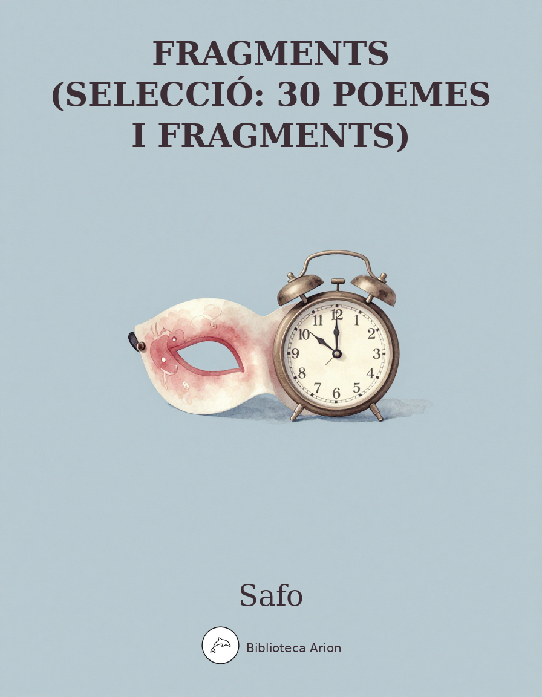

Fragments (selecció: 30 poemes i fragments)
Ἀποσπάσματα
Selecció de 30 fragments i poemes de Safo de Lesbos, la poeta lírica grega per excel·lència. Inclou l'Himne a Afrodita (fr. 1), el cèlebre fragment 31 (Φαίνεταί μοι), poemes nupcials (epitalamis), fragments amorosos i el poema de la mitjanit (fr. 168B). Text segons l'edició Lobel-Page / Voigt.
Numeració segons l’edició Lobel-Page / Voigt (LP/V). Text en grec antic (dialecte eòlic de Lesbos), domini públic.
Fragment 1 (Himne a Afrodita)
Ποικιλόθρον᾽ ἀθανάτ᾽ Ἀφρόδιτα, παῖ Δίος δολόπλοκε, λίσσομαί σε, μή μ᾽ ἄσαισι μηδ᾽ ὀνίαισι δάμνα, πότνια, θῦμον,
ἀλλὰ τυίδ᾽ ἔλθ᾽, αἴ ποτα κἀτέρωτα τὰς ἔμας αὔδας ἀΐοισα πήλοι ἔκλυες, πάτρος δὲ δόμον λίποισα χρύσιον ἦλθες
ἄρμ᾽ ὐπαζεύξαισα· κάλοι δέ σ᾽ ἆγον ὤκεες στροῦθοι περὶ γᾶς μελαίνας πύκνα δίννεντες πτέρ᾽ ἀπ᾽ ὠράνωἴθε- ρος διὰ μέσσω·
αἶψα δ᾽ ἐξίκοντο· σὺ δ᾽, ὦ μάκαιρα, μειδιαίσαισ᾽ ἀθανάτωι προσώπωι ἤρε᾽ ὄττι δηὖτε πέπονθα κὤττι δηὖτε κάλημμι
κὤττι μοι μάλιστα θέλω γένεσθαι μαινόλαι θύμωι· τίνα δηὖτε πείθω ἄψ σ᾽ ἄγην ἐς σὰν φιλότατα; τίς σ᾽, ὦ Ψάπφ᾽, ἀδίκηει;
καὶ γὰρ αἰ φεύγει, ταχέως διώξει, αἰ δὲ δῶρα μὴ δέκετ᾽, ἀλλὰ δώσει, αἰ δὲ μὴ φίλει, ταχέως φιλήσει κωὐκ ἐθέλοισα.
ἔλθε μοι καὶ νῦν, χαλέπαν δὲ λῦσον ἐκ μερίμναν, ὄσσα δέ μοι τέλεσσαι θῦμος ἰμέρρει, τέλεσον, σὺ δ᾽ αὔτα σύμμαχος ἔσσο.
Fragment 2
Δεῦρύ μ᾽ ἐκ Κρήτας ἐπ᾽[ὶ τόνδε] ναῦον ἄγνον, ὄππ[αι τοι] χάριεν μὲν ἄλσος μαλί[αν], βῶμοι δὲ τεθυμιάμε- νοι [λι]βανώτωι·
ἐν δ᾽ ὔδωρ ψῦχρον κελάδει δι᾽ ὔσδων μαλίνων, βρόδοισι δὲ παῖς ὀ χῶρος ἐσκίαστ᾽, αἰθυσσομένων δὲ φύλλων κῶμα καταίρει·
ἐν δὲ λείμων ἰππόβοτος τέθαλε ἠρίνοισιν ἄνθεσιν, αἰ δ᾽ ἄηται μέλλιχα πνέοισιν […]
ἔνθα δὴ σὺ […] ἔλοισα Κύπρι χρυσίαισιν ἐν κυλίκεσσιν ἄβρως ὀμμεμείχμενον θαλίαισι νέκταρ οἰνοχόαισον.
Fragment 16
Ο]ἰ μὲν ἰππήων στρότον, οἰ δὲ πέσδων, οἰ δὲ νάων φαῖσ᾽ ἐπ[ὶ] γᾶν μέλαι[ν]αν ἔ]μμεναι κάλλιστον, ἐγὼ δὲ κῆν᾽ ὄτ- τω τις ἔραται·
πά]γχυ δ᾽ εὔμαρες σύνετον πόησαι π]άντι τ[οῦ]τ᾽, ἀ γὰρ πόλυ περσκέθοισα κάλλος [ἀνθ]ρώπων Ἑλένα [τὸ]ν ἄνδρα τὸν [παναρ]ίστον
καλλ[ίποι]σ᾽ ἔβα ᾽ς Τροΐαν πλέοι[σα κωὐδ[ὲ πα]ῖδος οὐδὲ φίλων τοκ[ήων πά[μπαν] ἐμνάσθη, ἀλλὰ παράγαγ᾽ αὔταν ]σαν
]αμπτον γὰρ […] ]…κούφως τ[ ]οησ[.]ν ]με νῦν Ἀνακτορί[ας ὀ]νέμναι- σ᾽ οὐ] παρεοίσας,
τᾶ]ς κε βολλοίμαν ἔρατόν τε βᾶμα κἀμάρυχμα λάμπρον ἴδην προσώπω ἢ τὰ Λύδων ἄρματα κἀν ὄπλοισι πεσδομ]άχεντας.
Fragment 31 (Φαίνεταί μοι)
Φαίνεταί μοι κῆνος ἴσος θέοισιν ἔμμεν᾽ ὤνηρ, ὄττις ἐνάντιός τοι ἰσδάνει καὶ πλάσιον ἆδυ φωνεί- σας ὐπακούει
καὶ γελαίσας ἰμέροεν, τό μ᾽ ἦ μὰν καρδίαν ἐν στήθεσιν ἐπτόαισεν· ὠς γὰρ ἔς σ᾽ ἴδω βρόχε᾽, ὤς με φώναι- σ᾽ οὐδ᾽ ἒν ἔτ᾽ εἴκει,
ἀλλ᾽ ἄκαν μὲν γλῶσσα ἔαγε, λέπτον δ᾽ αὔτικα χρῶι πῦρ ὐπαδεδρόμηκεν, ὀππάτεσσι δ᾽ οὐδ᾽ ἒν ὄρημμ᾽, ἐπιρρόμ- βεισι δ᾽ ἄκουαι,
κὰδ δέ μ᾽ ἴδρως ψῦχρος ἔχει, τρόμος δὲ παῖσαν ἄγρει, χλωροτέρα δὲ ποίας ἔμμι, τεθνάκην δ᾽ ὀλίγω ᾽πιδεύης φαίνομ᾽ ἔμ᾽ αὔται·
ἀλλὰ πὰν τόλματον, ἐπεὶ καὶ πένητα […].
Fragment 34
Ἄστερες μὲν ἀμφὶ κάλαν σελάνναν ἂψ ἀπυκρύπτοισι φάεννον εἶδος, ὄπποτα πλήθοισα μάλιστα λάμπηι γᾶν [ἐπὶ παῖσαν]…
Fragment 44 (Noces d’Hèctor i Andròmaca)
Κύπρο[ς…] κᾶρυξ ἦλθε θε[…] Ἴδαος ταδεκ[…] ἔλεφ[ας] ἄγγελος […]ας τε καὶ ἄλλ[ας] Ἀσί[ας…]δ.[…ἔ]λαν κλέος ἄφθιτον· Ἔκτωρ καὶ συνέταιρ[οι] ἄγοισ᾽ ἐλικώπιδα Θήβας ἐξ ἰέρας Πλακίας τ᾽ ἀπ᾽ [ἀ]ιν[ν]άω ἄβραν Ἀνδρομάχαν ἐνὶ ναῦσιν ἐπ᾽ ἄλμυρον πόντον· πόλλα δ᾽ [ἐλί]γματα χρύσια κἄμματα πορφύρ[α] κατ[α]ΰτμενα, ποίκιλ᾽ ἀθύρματα, ἀργύρα τ᾽ ἀνάρ[ι]θμα ποτήρια κἀλέφαις. ὢς εἶπ᾽· ὀτραλέως δ᾽ ἀνόρουσε πάτ[η]ρ φίλος· φάμα δ᾽ ἦλθε κατὰ πτόλιν εὐρύχορον φίλοις. αὔτικ᾽ Ἰλιάδαι σατίν[αι]ς ὐπ᾽ ἐυτρόχοις ἆγον αἰμιόνοις, ἐπ[έ]βαινε δὲ παῖς ὄχλος γυναίκων τ᾽ ἄμα παρθενίκ[α]ν τ.[…]σφύρων, χῶρις δ᾽ αὖ Περάμοιο θύγ[α]τρες […] ἴππ[οι]ς δ᾽ ἄνδρες ὔπαγον ὐπ᾽ ἄρ[ματα…] πά[ντ]ες ἠΐθεοι, μεγάλω[σ]τι δ[…] ἴκελοι θέοι[ς] […]ά]γνον ἀολ[…] ὄρ[μ]αινον [πρ]ὸ[ς] Ἴλιον αὖλος δ᾽ ἀδυ[μ]έλης […]κίθαρις τ᾽ ὀν[εμίγν]υτο καὶ ψ[ό]φο[ς κ]ροτάλ[ων…]ιγ[…]ω δ᾽ ἄρα πάρθενοι ἄειδον μέλος ἄγν[ον, ἴ]κανε δ᾽ ἐς αἴθ[ε]ρα ἆχω θεσπεσία γελ[…] πάνται δ᾽ ἦς κὰτ ὄδο[ις…] κράτηρες φιάλαι τ᾽ ο[…]δε[…]αδ.[…] μύρρα καὶ κασία λίβανός τ᾽ ὀνεμείχνυτο, γύναικες δ᾽ ἐλέλυσδον ὄσαι προγενέστεραι, πάντες δ᾽ ἄνδρες ἐπήρατον ἴαχον ὄρθιον Πάον᾽ ὀνκαλέοντες ἐκάβολον εὐλύραν, ὔμνην δ᾽ Ἔκτορα κἈνδρομάχαν θεοεικέλο[ις].
Fragment 44A (Artem·la)
Πάρθενον […] ἄρτεμιν .[…]
Fragment 47
Ἔρος δ᾽ ἐτίναξέ μοι φρένας, ὠς ἄνεμος κὰτ ὄρος δρύσιν ἐμπέτων.
Fragment 48
Ἦλθες, καὶ ἐπόησας, ἔγω δέ σ᾽ ἐμαιόμαν, ὂν δ᾽ ἔψυξας ἔμαν φρένα καιομέναν πόθωι.
Fragment 49
Ἠράμαν μὲν ἔγω σέθεν, Ἄτθι, πάλαι ποτά … σμίκρα μοι πάις ἔμμεν᾽ ἐφαίνεο κἄχαρις.
Fragment 55
Κατθάνοισα δὲ κείσηι οὐδέ ποτα μναμοσύνα σέθεν ἔσσετ᾽ οὐδὲ πόκ᾽ ὔστερον· οὐ γὰρ πεδέχηις βρόδων τὼν ἐκ Πιερίας, ἀλλ᾽ ἀφάνης κἀν Ἀΐδα δόμωι φοιτάσηις πεδ᾽ ἀμαύρων νεκύων ἐκπεποταμένα.
Fragment 58 (Poema de la vellesa)
[…]παίδων τὰ κάλ᾽ ἔργα […] […] φίλ᾽ ἀέλιε, τὸ κάλον λέλογχε […] ἔγω δὲ φίλημμ᾽ ἀβροσύναν, […] τοῦτο καί μοι τὸ λάμπρον ἔρος τὠελίω καὶ τὸ κάλον λέλογχε.
Fragment 81
[…]δ᾽ ἄρα πάσαις ἔμ᾽ ἄρτι ξανθοτέρα[ν] ἐλ[.]ε τὰν κόμαν […]
Fragment 94
Τεθνάκην δ᾽ ἀδόλως θέλω· ἄ με ψισδομένα κατελίμπανεν
πόλλα καὶ τόδ᾽ ἔειπέ [μοι· ὤιμ᾽ ὠς δεῖνα πεπ[όνθ]αμεν, Ψάπφ᾽, ἦ μάν σ᾽ ἀέκοισ᾽ ἀπυλιμπάνω.
τὰν δ᾽ ἔγω τάδ᾽ ἀμειβόμαν· χαίροισ᾽ ἔρχεο κἄμεθεν μέμναισ᾽, οἶσθα γὰρ ὤς σε πεδήπομεν·
αἰ δὲ μή, ἀλλά σ᾽ ἔγω θέλω ὄμναισαι […] [ὄσ]σ᾽ ἐπάθομεν […]
[…] καὶ κάλ᾽ ἐπάσχομεν.
πό[λλοις γὰρ στεφάν]οις ἴων καὶ βρ[όδων …] κ[ίων τ᾽] ἄμοι κα[…]πὰρ ἔμοι περεθήκαο,
καὶ πό[λλαις ὐπα]θύμιδας πλέκ[ταις ἀμφ᾽ ἀ]πάλαι δέραι ἀνθέων ἔ[βαλες] πεποημμέναις,
καὶ π[…] μύρωι βρενθείωι […] ρυ[…] ἐξαλείψαο κα[ὶ βασι]ληΐωι,
καὶ στρώμν[αν ἐ]πὶ μολθάκαν ἀπάλαν πα[…]ωνα[…] ἐξίης πόθο[ν] […] αἴ[θ]ων.
κωὔτε τις […] οὔτε τι ἶρον οὐδ᾽ ὔ[…] ἔπλετ᾽ ὄππ[οθεν ἄμ]μες ἀπέσκομεν,
οὐκ ἄλσος […].ρος […]δ.[…]ψόφος […]οιδ[…]
Fragment 96
]…Σάρδιν[…] πόλλακι τυίδε ν[ῶ]ν ἔχοισα
[ὤ]ς π[οτ᾽]ρ᾽ ἀρίγνωτ[α…] σέ θέαι σ᾽ ἰκέλαν ἀρι- γνώται, σᾶι δὲ μάλιστ᾽ ἔχαιρε μόλπαι.
νῦν δὲ Λύδαισιν ἐμπρέπεται γυναί- κεσσιν ὤς ποτ᾽ ἀελίω δύντος ἀ βροδοδάκτυλος σελάννα
πάντα περρέχοισ᾽ ἄστρα· φάος δ᾽ ἐπί- σχει θάλασσαν ἐπ᾽ ἀλμύραν ἴσως καὶ πολυανθέμοις ἀρούραις·
ἀ δ᾽ ἐέρσα κάλα κέχυται, τεθά- λαισι δὲ βρόδα κἄπαλ᾽ ἄν- θρυσκα καὶ μελίλωτος ἀνθεμώδης·
πόλλα δὲ ζαφοίταισ᾽ ἀγάνας ἐπι- μνάσθεισ᾽ Ἄτθιδος ἰμέρωι λέπταν ποι φρένα κ[ᾶ]ρ β[ό]ρηται […]
Fragment 98
[…]α μάτε[ρ…] […]αν οὐ δύναμαι […] […] μιτράναν ἀλλ᾽ ὀ μὲν Μυτιληναίω[ν…] […]αι ποικίλαν ἔχοισα[ν…] […]αν μιτράναν […]
Fragment 102
Γλύκηα μᾶτερ, οὔτοι δύναμαι κρέκην τὸν ἴστον, πόθωι δάμεισα παῖδος βραδίναν δι᾽ Ἀφροδίταν.
Fragment 104a
Ἔσπερε, πάντα φέρων ὄσα φαίνολις ἐσκέδασ᾽ αὔως, φέρεις ὄιν, φέρεις αἶγα, φέρεις ἄπυ μάτερι παῖδα.
Fragment 104b
Ἔσπερε, πάντων ἀστέρων ὀ κάλλιστος.
Fragment 105a
Οἶον τὸ γλυκύμαλον ἐρεύθεται ἄκρωι ἐπ᾽ ὔσδωι, ἄκρον ἐπ᾽ ἀκροτάτωι, λελάθοντο δὲ μαλοδρόπηες, οὐ μὰν ἐκλελάθοντ᾽, ἀλλ᾽ οὐκ ἐδύναντ᾽ ἐπίκεσθαι.
Fragment 105b
Οἴαν τὰν ὐάκινθον ἐν ὤρεσι ποίμενες ἄνδρες πόσσι καταστείβοισι, χάμαι δέ τε πόρφυρον ἄνθος…
Fragment 111
Ἴψοι δὴ τὸ μέλαθρον, ὐμήναον, ἀέρρετε, τέκτονες ἄνδρες, ὐμήναον· γάμβρος ἔρχεται ἴσος Ἄρευι, ἄνδρος μεγάλω πόλυ μέζων.
Fragment 112
Ὄλβιε γάμβρε, σοὶ μὲν δὴ γάμος ὠς ἄραο ἐκτετέλεστ᾽, ἔχης δὲ πάρθενον ἂν ἄραο.
σοὶ χάριεν μὲν εἶδος, ὄππατα δ᾽ […] μέλλιχ᾽, ἔρος δ᾽ ἐπ᾽ ἰμέρτωι κέχυται προσώπωι. […]τετίμακ᾽ ἐξόχως σ᾽ Ἀφροδίτα.
Fragment 114
Παρθενία, παρθενία, ποῖ με λίποισ᾽ ἀποίχηι; — Οὐκέτι ἤξω πρὸς σέ, οὐκέτι ἤξω.
Fragment 115
Τίωι σ᾽, ὦ φίλε γάμβρε, κάλως ἐικάσδω; ὄρπακι βραδίνωι σε μάλιστ᾽ ἐικάσδω.
Fragment 118
Δεῦτέ νυν ἄβραι Χάριτες καλλίκομοί τε Μοῖσαι.
Fragment 120
Ἆ τὸν Ἄδωνιν.
Fragment 126
Κατ᾽ ἔμον στάλαγμον.
Fragment 130
Ἔρος δηὖτέ μ᾽ ὀ λυσιμέλης δόνει, γλυκύπικρον ἀμάχανον ὄρπετον.
Fragment 131
Ἄτθι, σοὶ δ᾽ ἔμεθεν μὲν ἀπήχθετο φροντίσδην, ἐπὶ δ᾽ Ἀνδρομέδαν πόται.
Fragment 132
Ἔστι μοι κάλα πάις χρυσίοισιν ἀνθέμοισιν ἐμφέρη[ν] ἔχοισα μόρφαν Κλέϊς ἀγαπάτα, ἀντὶ τᾶς ἔγωὐδὲ Λυδίαν παῖσαν οὐδ᾽ ἐράνναν…
Fragment 137
Θέλω τί τ᾽ εἴπην, ἀλλά με κωλύει αἴδως […]
Fragment 147
Ὀ μὲν γὰρ κάλος ὄσσον ἴδην πέλεται [κάλος], ὀ δὲ κἄγαθος αὔτικα καὶ κάλος ἔσσεται.
Fragment 168B (Poema de la mitjanit)
Δέδυκε μὲν ἀ σελάννα καὶ Πληΐαδες, μέσαι δὲ νύκτες, παρὰ δ᾽ ἔρχετ᾽ ὤρα, ἔγω δὲ μόνα κατεύδω.
Fragments (selecció: 30 poemes i fragments)
Safo
Traduït del grec per Biblioteca Arion
Fragment 1 (Himne a Afrodita)
Afrodita immortal del tron iridescent, filla de Zeus teixidora d’enganys, et suplico: no em vencis el cor amb angoixes ni penes, senyora,
sinó vine aquí, com altres vegades quan, sentint de lluny les meves paraules, em vas escoltar, i vas arribar deixant la casa daurada del teu pare
després d’unir el carro: et portaven ràpids pardals batent espesses les ales per damunt de la terra fosca, des del cel a través de l’aire pur;
aviat van arribar. I tu, benaurada, somrient amb el rostre immortal em preguntaves què pateixo ara i per què t’invoco ara
i què vull que em passi més que res en el meu cor boig. «A qui he de convèncer que torni al teu amor? Qui et fa mal, Safo?
Car si fuig, aviat et perseguirà, si no accepta regals, te’n donarà, si no estima, aviat estimarà encara que no vulgui.»
Vine a mi també ara, i allibera’m d’aquesta cruel angoixa. Tot allò que el meu cor desitja complir, compleix-ho. Tu mateixa sigues la meva aliada.
Fragment 2
Vine a mi des de Creta a aquest temple sagrat, on hi ha un bosc encantador de pomeres, i els altars perfumats amb encens;
i ressona dins l’aigua fresca entre les branques de pomera, i tot el lloc està ombrejat de roses, i de les fulles tremoloses baixa el somni;
i un prat on pasturen els cavalls floreix amb flors de primavera, i les brises bufen dolçament […]
Allí tu […] prenent, Xipriota, en copes daurades, delicadament, nèctar barrejat amb les festes vessa’l.
Fragment 16
Uns diuen que un estol de cavalleria, altres d’infanteria, altres de naus, és la cosa més bella sobre la terra fosca, però jo dic que és allò que hom estima;
és del tot fàcil fer-ho comprensible a tothom, perquè aquella que superava amb escreix en bellesa tots els humans, Helena, l’home que era el millor de tots
va abandonar i se’n va anar navegant cap a Troia i ni del fill ni dels pares estimats gens es va recordar, sinó que la va desviar […]
[…] car […] […] lleugerament […] […] ara m’ha fet recordar Anactòria que no és aquí,
d’ella voldria el pas encantador i l’esclat lluminós del rostre més que els carros dels lidis i els soldats que combaten amb armes.
Fragment 31 (Φαίνεταί μοι)
Em sembla igual als déus aquell home, el qui assegut davant teu de prop escolta la teva veu dolça
i el teu riure encisador, que a mi el cor dins el pit m’ha sobresaltat; perquè quan et miro un instant, ja no em surt cap paraula,
sinó que la llengua se m’ha trencat, i un foc subtil de seguida m’ha recorregut sota la pell, amb els ulls no hi veig res, i les orelles em brunzeixen,
i la suor freda em pren, i un tremolor m’agafa tota, i estic més verda que l’herba, i em sembla que em falta poc per ser morta;
però tot s’ha de suportar, perquè fins i tot un pobre […].
Fragment 34
Les estrelles al voltant de la bella lluna amaguen de nou la seva forma resplendent, quan plena il·lumina amb més força tota la terra…
Fragment 44 (Noces d’Hèctor i Andròmaca)
Xipre […] va arribar l’herald […] Ideu, el missatger veloç […] […] i de la resta d’Àsia […] glòria immortal: Hèctor i els seus companys porten la noia d’ulls vius des de la sagrada Tebes i de Plàcia, la font perenne, la delicada Andròmaca en naus sobre el mar salat; molts braçalets d’or i túniques de porpra perfumades, ornaments variats, copes de plata incomptables i ivori. Així va dir; i àgilment es va alçar el pare estimat; la notícia va córrer per la ciutat d’amples carrers entre els amics. De seguida els fills d’Ílion amb carros de belles rodes hi van portar les mules, i hi pujava tota la multitud de dones i de donzelles […] de turmells fins, i a part les filles de Príam […] els homes van enganxar els cavalls als carros […] tots els joves, i amb gran […] semblants als déus […] sagrat […] s’encaminaven cap a Ílion, i la flauta de dolça melodia […] i la cítara es barrejaven i el so de les castanyoles […] i les donzelles cantaven un cant sagrat, i arribava a l’èter un eco diví […] per tots els camins […] cràteres i copes […] mirra i càssia i encens es barrejaven, les dones grans cridaven de joia, tots els homes entonaven un cant bell i agut invocant Pèon, l’arquer de bona lira, i cantaven Hèctor i Andròmaca, semblants als déus.
Fragment 44A (Artem·la)
La donzella […] Àrtemis […]
Fragment 47
Eros m’ha sacsejat les entranyes, com el vent a la muntanya cau sobre els roures.
Fragment 48
Has vingut, i has fet bé, jo et desitjava, i has refredat el meu cor que cremava de desig.
Fragment 49
T’estimava, Àttis, fa temps… Em semblaves una nena petita i sense gràcia.
Fragment 55
Morta jauràs i mai ningú no es recordarà de tu ni ara ni després; perquè no tens part de les roses de Pièria, sinó que invisible també a la casa d’Hades vagaràs entre les ombres dels morts, esvaïda.
Fragment 58 (Poema de la vellesa)
[…] les belles obres dels infants […] […] estimat sol, el que és bell li ha tocat […] jo, en canvi, estimo la delicadesa, […] i a mi l’esplendor i la bellesa del sol m’ha tocat.
Fragment 81
[…] doncs de totes a mi la més rossa […] la cabellera […]
Fragment 94
Vull morir sincerament; ella em deixava plorant
i em deia moltes coses, i això: «Ai, quines coses terribles hem patit, Safo, de veritat et deixo contra la meva voluntat.»
I jo li vaig respondre: «Vés-te’n contenta i de mi recorda’t, perquè saps com t’hem estimada;
i si no, jo vull recordar-te […] tot allò que hem viscut […]
[…] i les coses belles que hem compartit.
Perquè moltes corones de violetes i de roses […] i […] et vas posar al meu costat,
i moltes garlandes teixides al voltant del coll delicat fetes de flors,
i amb […] perfum reial […] et vas ungir,
i sobre estovalles toves la delicada […] satisfeies el desig […].
I no hi havia cap […] ni cap temple ni […] del qual estiguéssim absents,
ni bosc […] so […] cant […]
Fragment 96
[…] Sardes […] sovint cap aquí girant el pensament
[…] com en un temps coneguda […] et considerava semblant a una deessa insigne, i sobretot es delectava amb el teu cant.
Ara entre les dones lídies destaca com quan el sol s’ha post, la lluna de dits rosats
supera tots els estels; i la seva llum s’escampa sobre el mar salat i igualment sobre els camps florits;
i la rosada bella s’ha vessat, i floreixen les roses i les tendres cerfolls i el melilot florit;
i molt vagant d’ací d’allà, recordant la dolça Àttis amb desig, el cor tendre li devora el cor […]
Fragment 98
[…] mare […] […] no puc […] […] la mitra però el de Mitilene […] […] tenint una brodada […] […] mitra […]
Fragment 102
Dolça mare, no puc pas teixir la tela, vençuda pel desig d’un noi per obra de l’Afrodita suau.
Fragment 104a
Vespre, tot ho portes que l’aurora lluminosa va dispersar: portes l’ovella, portes la cabra, portes el fill a la mare.
Fragment 104b
Vespre, de tots els estels el més bell.
Fragment 105a
Com la poma dolça que vermelleja a la punta de la branca, a la punta de la punta, i els collidors de pomes l’han oblidada, no, no l’han oblidada, sinó que no la van poder abastar.
Fragment 105b
Com el jacint a les muntanyes que els homes pastors trepitgen amb els peus, i a terra la flor de porpra…
Fragment 111
Alceu el sostre, himeneu! Alceu-lo, fusters, himeneu! El nuvi arriba, igual a Ares, molt més gran que un home gran.
Fragment 112
Feliç nuvi, les teves noces tal com les desitjaves s’han acomplert, i tens la donzella que desitjaves.
El teu aspecte és encantador, i els teus ulls […] dolços, i l’amor s’escampa sobre el teu rostre encisador. […] t’ha honrat singularment Afrodita.
Fragment 114
Virginitat, virginitat, on te n’has anat deixant-me? — Mai més no tornaré a tu, mai més no tornaré.
Fragment 115
A què, estimat nuvi, et puc comparar bellament? A una branca esvelta et comparo sobretot.
Fragment 118
Veniu ara, Gràcies delicades i Muses de bells cabells.
Fragment 120
Ai, Adonis!
Fragment 126
Gota a gota regalimo.
Fragment 130
Eros, un altre cop, l’afluixador de membres, em sacseja, dolçamarg, impossible de vèncer, bèstia.
Fragment 131
Àttis, a tu de mi et desagrada pensar-hi, i voles cap a Andròmeda.
Fragment 132
Tinc una filla bonica com flors daurades, de forma semblant, la meva estimada Cleis, per la qual jo ni tota la Lídia ni l’encantadora…
Fragment 137
Vull dir-te alguna cosa, però la vergonya m’ho impedeix […]
Fragment 147
El que és bell, és bell només mentre es mira, però el que és bo, de seguida també serà bell.
Fragment 168B (Poema de la mitjanit)
S’ha post la lluna i les Plèiades, és mitjanit, l’hora passa, i jo dormo sola.
Traducció de domini públic.
Notes
Sobre l'edició i numeració dels fragments
Els fragments segueixen la numeració estàndard de l’edició Lobel-Page (LP, 1955), revisada per Eva-Maria Voigt (V, 1971). El text grec base prové de la col·lecció Perseus Digital Library (Tufts University). Els claudàtors […] indiquen llacunes en el papir o conjectures dels editors.
↩ Tornar al textEl dialecte eòlic de Lesbos
Safo escrivia en el dialecte eòlic de Lesbos, que presenta diferències notables respecte al grec àtic estàndard: psilosi (absència d’aspiració: ἄελιος per ἥλιος), formes verbals pròpies, i lèxic específic (βρόδον per ῥόδον ‘rosa’, σελάννα per σελήνη ‘lluna’). La traducció intenta preservar el registre líric i íntim que caracteritza aquest dialecte.
↩ Tornar al textFragment 1 — Himne a Afrodita
Únic poema de Safo conservat íntegrament. Segueix l’estructura formal de l’himne clètic (invocació, record d’ajuda passada, petició present). «Ποικιλόθρονος» (v. 1) és un hàpax: pot significar ‘del tron brodat’ o ‘del tron variat/iridiscent’. Hem optat per ‘tron brodat’ seguint la interpretació majoritària.
↩ Tornar al textFragment 2 — El jardí sagrat
Descriu un τέμενος (recinte sagrat) d’Afrodita. La sinestèsia (aigua freda, perfum d’encens, ombra de roses, brisa) crea un espai de culte sensorial. El nèctar servit en copes daurades suggereix un ritual de libació.
↩ Tornar al textFragment 16 — Allò que hom estima
Poema programàtic on Safo contraposa la seva estètica personal (l’amor com a valor suprem) al cànon masculí de bellesa (exèrcits, naus). L’exemple d’Helena demostra el poder irresistible d’Eros: ni el millor dels homes ni la família poden competir amb el desig.
↩ Tornar al textFragment 31 — Φαίνεταί μοι
Un dels poemes més influents de l’antiguitat, imitat per Catul (poema 51). Descriu els símptomes físics de l’amor amb precisió quasi clínica: pèrdua de veu, foc sota la pell, ceguesa, brunzit d’orelles, suor freda, tremolor, pal·lidesa. El vers final, fragmentari, sembla aportar una reflexió estoica.
↩ Tornar al textFragment 34 — Les estrelles i la lluna
Breu comparació còsmica: les estrelles amaguen la seva llum davant la lluna plena. S’ha interpretat com a metàfora de la bellesa que eclipsa totes les altres.
↩ Tornar al textFragment 44 — Noces d'Hèctor i Andròmaca
El fragment narratiu més llarg de Safo. Tracta un tema homèric (Ilíada) però des de la perspectiva festiva i cerimonial, no bèl·lica. Destaca la processó nupcial, la música, els perfums i l’alegria col·lectiva.
↩ Tornar al textFragment 55 — Contra una dona sense cultura
Adreçat a una dona que no participa de la poesia (les roses de Pièria). Safo li anuncia l’oblit absolut després de la mort: sense la immortalitat que dóna l’art, vagarà com una ombra a l’Hades.
↩ Tornar al textFragment 94 — El comiat
Un dels fragments més extensos i emotius. Descriu el comiat entre Safo i una companya, amb un catàleg de records compartits: corones, garlandes, perfums, estovalles. El «τεθνάκην δ᾽ ἀδόλως θέλω» (‘vull morir sincerament’) ha generat debat: és Safo qui parla o la companya?
↩ Tornar al textFragment 96 — La dona a Sardes
Companya exiliada a Lídia que recorda Àttis. La comparació amb la lluna de dits rosats (βροδοδάκτυλος, epítet homèric transferit de l’aurora a la lluna) és una de les imatges més celebrades de Safo.
↩ Tornar al textFragment 105a — La poma dolça
Símil nupcial: la núvia és com una poma dolça a la punta més alta de l’arbre, que els collidors no han pogut —no oblidat— abastar. Imatge de la virginitat desitjada però inaccessible fins al matrimoni.
↩ Tornar al textFragment 130 — Dolçamarg
Conté el mot γλυκύπικρον (‘dolçamarg’), creat per Safo i que ha passat a totes les llengües europees (bittersweet, agrodolce, aigre-doux). Eros és alhora dolç i amarg, una bèstia impossible de dominar.
↩ Tornar al textFragment 132 — Cleis
Referència a una nena, probablement la filla de Safo, comparada amb flors daurades. El nom Cleis coincideix amb el de la mare de Safo segons la tradició antiga.
↩ Tornar al textFragment 168B — Poema de la mitjanit
Quatre versos d’una economia expressiva extraordinària. La lluna s’ha post, les Plèiades també, és mitjanit, el temps passa —i Safo dorm sola. La solitud nocturna contrasta amb el cosmos en moviment.
↩ Tornar al textGlossari
- (Aphrodita)
-
Traducció: Afrodita
↩ Tornar al text - (Eros)
-
Traducció: Eros
↩ Tornar al text - (Psapphō)
-
Traducció: Safo
↩ Tornar al text - (thymos)
-
Traducció: cor / ànim
↩ Tornar al text - (philotēs)
-
Traducció: amor / amistat
↩ Tornar al text - (brodon)
-
Traducció: rosa
↩ Tornar al text - (selanna)
-
Traducció: lluna
↩ Tornar al text - (Pieria)
-
Traducció: Pièria
↩ Tornar al text - (habrosyna)
-
Traducció: delicadesa / refinament
↩ Tornar al text - (hymenaon)
-
Traducció: himeneu
↩ Tornar al text - (glykypikron)
-
Traducció: dolçamarg
↩ Tornar al text - (lysimelēs)
-
Traducció: afluixador de membres
↩ Tornar al text - (Atthis)
-
Traducció: Àttis
↩ Tornar al text - (Kleis)
-
Traducció: Cleis
↩ Tornar al text - (epithalamion)
-
Traducció: epitalami
↩ Tornar al text